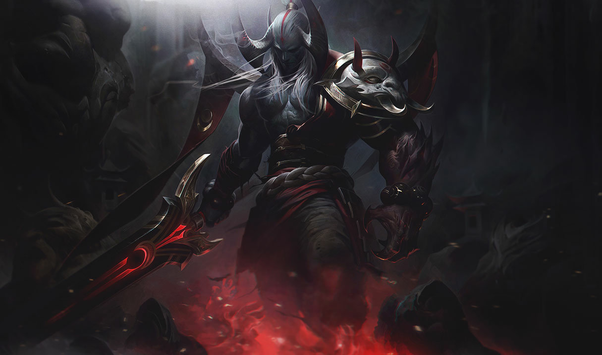
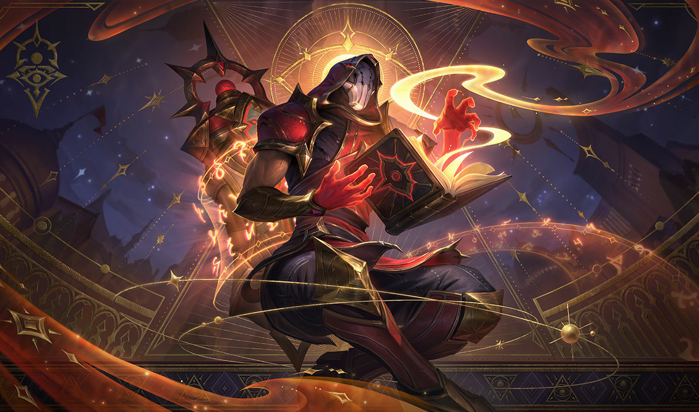

Informacion de los personajes
Aatrox
Aatrox y sus hermanos, que alguna vez fueron respetados defensores de Shurima contra el Vacío, se convirtieron en una amenaza aún mayor para Runaterra y los derrotaron con hechicería mortal usada con astucia. Pero, después de siglos de encarcelamiento, Aatrox fue el primero en encontrar la libertad una vez más; corrompió y transformó a los bastante tontos como para intentar blandir el arma mágica que contenía su esencia. Ahora, con cuerpos robados, camina por Runaterra con una apariencia retorcida de su forma original y busca la venganza apocalíptica que tanto desea. 
Ryze
Ryze, considerado por muchos como uno de los hechiceros más expertos en Runaterra, es un antiguo y endurecido archimago con una responsabilidad casi imposible de llevar. Armado con una constitución sin igual y una gran gama de conocimiento místico, se pasa la vida buscando Runas del Mundo, fragmentos de magia pura que alguna vez moldearon el mundo a partir de la nada. Debe recuperar esos glifos antes de que caigan en las manos equivocadas porque, aunque alguna vez se usaron para construir a Runaterra, también se pueden utilizar para destruirla. 